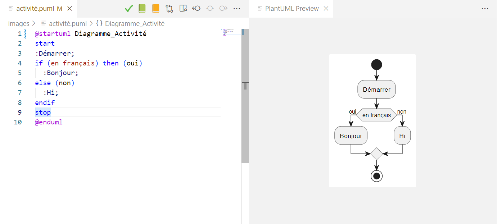

Le chapitre F20/A22 définit quelques termes importants pour la modélisation avec UML et les outils.
En mode esquisse, lorsqu’on dessine un modèle sur un tableau blanc ou sur papier, un outil pratique pour numériser le tout est Microsoft Lens (Android ou iOS). Les filtres pour supprimer les reflets sur les tableaux blancs sont impeccables.
Tous les travaux demandés pour les examens (de LOG210 à l’École de technologie supérieure) doivent être faits à la main. Pour cette raison, il vaut mieux pratiquer à dessiner les modèles en mode esquisse (à la main).
Dans la méthodologie de ce manuel, on exploite l’outil PlantUML pour faire beaucoup de modèles. C’est un outil qui a plusieurs avantages :
- Il est basé sur un langage spécifique à un domaine (en anglais domain-specific language ou DSL), dont les fichiers peuvent être facilement mis sur un contrôle de version (Git) ;
- Il est basé sur du code libre ;
- Il s’occupe de la mise en page des diagrammes (cela est parfois un inconvénient si un modèle est complexe) ;
- Il est populaire (utilisé par des ingénieur(e)s chez Google pour documenter Android, Pay, etc.) ;
- Il existe plusieurs supports pour les outils de documentation :
- extension PlantUML pour Visual Studio Code (figure 13.2) avec tutoriel ;
- extension PlantUML Gizmo pour Google Docs et Google Slides, développée en 2014 par le professeur Christopher Fuhrman dans le cadre de son travail à l’ÉTS (figure 13.3).

Pour une personne débutante, le langage PlantUML peut sembler plus compliqué que d’utiliser un outil graphique comme Lucidchart. Cependant, pour beaucoup de diagrammes (comme les diagrammes de séquence), ça peut être plus long à créer ou à modifier. Bien que ces outils aient des gabarits ou des modes « UML », ceux-ci ne sont pas toujours conviviaux ou complets. Ce sont souvent juste des objets groupés, et le vrai sens de la notation UML n’est pas considéré.
Par exemple, une ligne de vie dans un diagramme de séquence est toujours verticale, mais un éditeur graphique quelconque permet de l’orienter dans n’importe quel sens. Ça peut prendre beaucoup de clics pour effectuer une modification, et on peut obtenir des résultats intermédiaires qui n’ont aucun sens en UML (voir la figure 13.5). Il est possible de corriger le diagramme, mais en combien de clics ? C’est très vite agaçant.
13.1 Exemples de diagrammes avec PlantUML
Dans le menu « Select sample diagram » de PlantUML Gizmo (Google Docs), il y a plusieurs exemples de diagrammes utilisés dans le cadre de ce manuel et du livre de Larman (2005) (voir la figure 13.4).
13.2 Astuces PlantUML
- Comment intégrer PlantUML dans le
Readme.mdde GitHub/GitLab ? - Le serveur de PlantUML.com génère un diagramme à partir d’une URL,
https://plantuml.com/plantuml/{forme}/{clé}, qui contient une clé comme
Syp9J4vLqBLJSCfFib9mB2t9ICqhoKnEBCdCprC8IYqiJIqkuGBAAUW2rJY256DHLLoGdrUS2W00.
La clé est en fait une représentation compressée du code source. - On peut changer la forme du diagramme en changeant la partie
{forme}de l’URL :{forme}→png,imgousvg: représentation graphique correspondante ;{forme}→uml: récupération du code source PlantUML (ça marche avechttp:seulement) ;
- On peut également récupérer le code source d’une URL avec l’outil PlantUML localement avec l’option
-decodeurl {clé}de la ligne de commande :
$ java -jar plantuml.jar -decodeurl Syp9J4vLqBLJSCfFib9mB2t9ICqhoKnEBCdCprC8IYqiJIqkuGBAAUW2rJY256DHLLoGdrUS2W00
@startuml
Alice -> Bob: Authentication Request
Bob --> Alice: Authentication Response
@enduml- Les images
pnggénérées par le serveur ou par l’outil contiennent une copie du code source dans les métadonnées PNG.- On peut récupérer le code source PlantUML à partir d’une image PNG avec un outil sur le Web comme ceci.
- On peut également utiliser l’option
-metadatade la ligne de commande PlantUML :
$ java -jar plantuml.jar -metadata diagram.png > diagram.puml